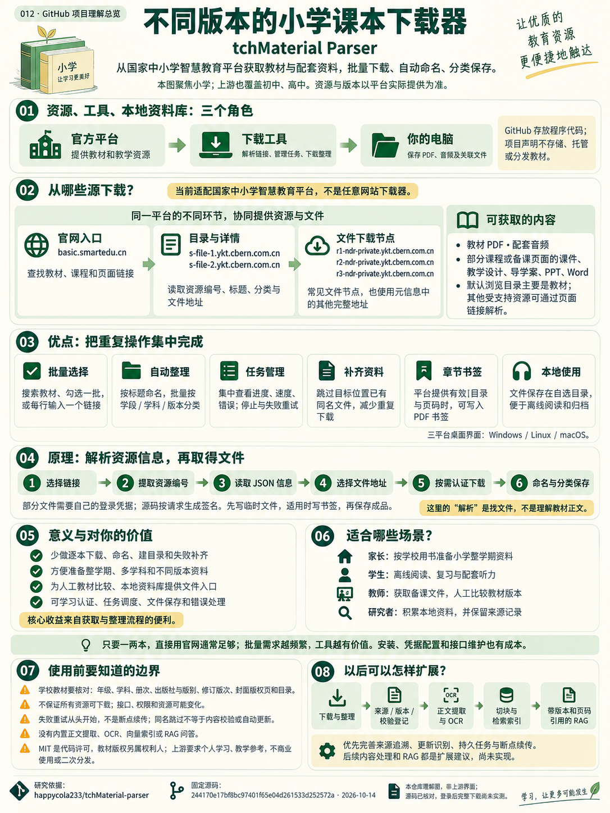

国家中小学
智慧教育平台
面向学生、教师和家长的教育资源入口，提供教材、课程及教学材料。
前往官方平台 ↗从我们的讨论开始理解
tchMaterial-parser 是一个从国家中小学智慧教育平台获取教材与配套资料的桌面工具。它把多次寻找、下载、命名和归档，组织成一批任务。
本页聚焦小学资料；上游也覆盖初中、高中。具体教材、版本和配套文件以平台实际提供为准。
先分清三个角色
我们讨论中的“智慧教育平台”，指一个具体的官方网站。资料来自它，工具帮助你获取，下载结果由你保存在本地。
面向学生、教师和家长的教育资源入口，提供教材、课程及教学材料。
前往官方平台 ↗GitHub 仓库提供程序代码。程序查找文件地址并执行下载、命名、任务管理。
看看它如何下载 ↓你选择的 PDF、音频和教学材料，保存在你指定的目录，供离线使用。
查看整理方式 ↓平台背景：教育部平台建设与应用介绍。该介绍用于说明定位和多版本资源，不将历史数量当作当前库存。
02 / 已有能力
最直接的功能是教材获取。新版也能解析部分课程、专题与备课页面中的关联文件。
按资源名称或完整分类路径筛选，教材列表支持批量勾选，也可以每行粘贴一个页面链接。
获取教材 PDF、配套音频，及受支持页面里的导学案、课件、教学设计、PPT、Word 等。
用资源标题命名；批量时按“学段 / 学科 / 版本”保存。已有同名文件可跳过。
查看排队、进度、大小、速度和错误详情；停止任务、重试失败项、重新解析页面。
开启后，结合平台提供的目录和页码映射写入书签，方便在本地阅读器中跳转。
上游提供 Windows、Linux、macOS 的图形界面；支持深浅色主题与高分辨率显示。
固定源码的默认资源列表主要加载电子教材。其他部分资源可粘贴链接解析；并不表示所有教学资源都已出现在浏览列表中，也不保证任意课程文件都可下载。
03 / 为什么用它
只要一两本教材，直接用官网通常足够。需要整学期、多学科、多版本与配套资料时，集中操作和自动整理更有价值。
| 你的任务 | 直接在官网获取 | 工具额外做的事 |
|---|---|---|
| 偶尔获取一两本 | 按页面提供的方式获取 | 便利有限，安装和配置也需要时间 |
| 一批教材 / 多个版本 | 逐项使用资源页面与获取入口 | 集中选择或输入链接，统一排队 |
| 教材与配套音频 | 查看教材及其关联资源 | 解析教材时尝试一并获取关联音频 |
| 命名、建目录、归档 | 按自己的方式整理文件 | 按标题命名，按学段、学科、版本分类 |
| 部分失败 / 补齐缺失 | 自行记下失败项再处理 | 集中显示错误，重试失败项，跳过已有同名文件 |
| 本地章节跳转 | 取决于下载的 PDF 本身 | 有有效目录映射时，可以写入 PDF 书签 |
价值来自流程便利。下载内容仍来自平台。版本确认、文件抽查和教学使用判断，需要你完成。
也有额外成本。需要安装程序，部分资源需配置登录凭据，平台接口改变时可能要更新工具。
没有测量固定的提速或节省比例；上述价值判断来自已核对的功能及操作场景。
04 / 什么时候适合你
选择一个场景，看看对应的获取方式、便利与需要核对的事项。
先确认学校用书，在官网阅读或按其提供的方式获取。少量需求时，安装工具和设置凭据未必更省事。
核对年级、学科、上下册、出版社和修订版次。工具也不会替你确认学校采用的版本。
准备整学期小学教材、复习资料或英语听力，把同一版本的文件整理在一起。
获取相关教学文件，或并排比较同年级同学科教材的目录与章节。工具不自动分析差异。
实践批量获取、来源登记；学习认证、任务调度与文件保存。以后接入 RAG 时，再补上内容处理环节。
经常收集不同版本的小学资料时，它能减少重复操作；没有批量需求时，主要可作为源码学习案例。其他网站、农业资料或论文来源需要单独适配。
05 / 版本先选对
能否对应学校课本，要对照学校用书。平台有不同出版社和版本，不能只凭“几年级、上册”判断。
用书核对示例
还要确认出版社、版别、修订年份与目录。封面、版权页和学校给出的用书信息比模糊书名更有用。
印次变化不必然代表内容修订；ISBN 可辅助核对，也不应作为唯一判断。
下载空白资料登记表 →配套课程可辅助学习。学校的授课顺序、进度、补充内容和作业安排仍可能不同。
06 / 下载源
工具先读取平台提供的资源信息，再请求实际文件。项目作者没有把教材打包进 GitHub 仓库。
你浏览、查找教材与课程的官方网站。
代码读取分类、版本索引、资源详情与关联信息。
常见文件下载节点，也可能使用元信息中已有的其他完整地址。
常见完整文件域名为 r1-ndr-private.ykt.cbern.com.cn、r2-ndr-private.ykt.cbern.com.cn、r3-ndr-private.ykt.cbern.com.cn。详情数据常见于 s-file-1.ykt.cbern.com.cn。这是固定源码中的地址，不保证平台永久使用相同节点。
“获得文件直链”不等于可以直接匿名下载。某些地址需要凭据与针对本次请求生成的认证头。
07 / 下载原理
这里解析的是链接、编号与资源信息，目的是取得文件地址。正文理解、知识点提取和问答，需要后续增加。
程序中的教材列表可以批量勾选，与链接输入框同步。其他受支持的资源，可以每行粘贴一个页面链接。
这一阶段得到：待处理的资源页面链接列表
点击步骤查看解释。这是流程教学交互，不会请求平台、使用凭据或执行下载。
部分文件需要凭据。当前源码用三项信息，为每条地址生成对应签名，放入请求头；不能保证一个复制出的直链随时可用。
将目录树与页码映射合并，再嵌入 PDF。前提是开启选项，并且平台提供有效信息。
有限并发、分块写入、按条件检查大小。结束或失败时处理临时文件；这不等于断点续传或完整内容校验。
设置凭据需要包含 access_token、mac_key、diff 的 JSON。签名以地址、请求方法和 nonce 等构造原文，使用 HMAC-SHA256 与 Base64 生成 X-ND-AUTH。
下载工作线程上限为 3，并拉开请求间隔。部分 HTTP 400 在原地址等待、重新签名后重试；401 / 403 不会靠切换节点解决。未知文件大小或压缩传输时，不能照搬 Content-Length 校验。
凭据保存在本地配置；Windows 使用注册表，Linux / macOS 使用本地 JSON。本导读网页不提供凭据输入框。
08 / 实际使用
先确定版本与保存方式，用少量资源检验流程，再考虑整个学期的资料。
记录年级、学科、上下册、出版社和版次，在官方平台找到对应页面。
到 GitHub Releases 下载适合 Windows、Linux 或 macOS 的发行包。源码运行路线见上游贡献者指南。
批量勾选教材，或每行粘贴一个受支持的链接；先试一两本，选择保存目录与书签选项。
部分资源需要登录。按上游使用说明获取并在本地工具设置；凭据可能过期。
下载后打开 PDF、试听音频、检查章节与版本。失败项查看原因再重试；当前重新下载从头开始。
流程确认后扩大批次，按需登记版本、来源与日期。已有同名文件也要留意是否是旧版。
不要把登录凭据粘贴到本导读网页、公开文档或资料登记表。平台认证与文件权限仍决定资源能否访问。
09 / 下载之后
工具负责标题命名和分类路径。本地资料库要长期可用，还需要明确教材版本、来源与检查结果。
教材资料/
└─ 小学/
├─ 数学/
│ ├─ 人教版/
│ │ └─ 教材名称.pdf
│ └─ 北师大版/
│ └─ 教材名称.pdf
└─ 英语/
└─ 对应教材版本/
├─ 教材名称.pdf
└─ 配套音频.mp3记录学段、年级、学科、册次、出版社、版别、修订版次、来源页面、资源编号、获取日期、本地路径和抽查结果。
下面下载的是一份空白 CSV，可自行用表格软件填写。它不会自动抓取资料，也不含真实教材或登录凭据。
跳过已有文件主要依据同名目标路径是否存在，不意味着校验了内容、版次或哈希，也不是自动更新教材。
10 / 扩展建议
以下是后续设计方向，不是已经完成的功能。每一步都应先用真实资料验证。
资源编号、版次、日期、校验值；识别新旧版本。保留原始文件与添加书签后的文件关系。
持久任务、断点续传、缓存与更新识别；验证更多资源目录，分离下载逻辑和界面。
PDF、Word、PPT 正文提取；扫描件 OCR、音频转写、章节搜索。
切块、建立索引、检索相关段落，让 AI 根据教材回答并标明版本与原文页码。
本工具获取文件来源与版本登记正文提取 / OCR切块与索引检索、回答、核对引用
当前工具完成前面的下载整理；后续步骤需要另加系统。可以借鉴已研究的 RAG 项目，仍须验证解析、检索与回答质量。
| 未来场景 | 下载器提供的基础 | 需要另外增加与验证 |
|---|---|---|
| 家庭或教师资料台账 | 教材与配套文件集中保存 | 资源编号、来源、版次、日期、校验值和抽查记录，方便追溯出处 |
| 按学期补齐与版本更新提醒 | 批量获取、同名目标存在时跳过 | 学校用书清单、资源版本比较、持久任务、缺项报告与失败恢复；不要只按文件名判断更新 |
| 章节搜索与人工版本对照 | 取得相应版本的 PDF 与目录映射 | 正文提取、扫描件 OCR、章节对齐与出处展示；目录差异不等于知识点质量差异 |
| 备课材料库 | 受支持页面关联的教学文件 | 关联教材章节、来源与格式处理、关键词检索和人工筛选；课程顺序按实际教学安排 |
| 配套听力检索 | 教材关联音频 | 音频转写、片段时间戳与课文匹配，抽查识别结果及配套版本 |
| 带引用的教材学习问答 | 可作为 RAG 系统的文件入口 | 切块、索引、检索、模型回答、原文页码和教材版本引用，以及答案质量评估 |
这些是可扩展场景，不是当前已实现的功能。若扩展到其他教育网站或其他资料类型，需要单独适配来源、格式与访问权限。
11 / 边界与常见问题
GitHub 仓库主要放程序代码。项目声明不存储、托管或分发教材；资源在平台使用的服务器上，运行工具后保存到你选择的本地目录。
当然可以。少量需求或在线学习，官网通常够用。该工具的额外便利集中在批量操作、命名分类、配套文件和失败补齐；你仍需核对版本和文件。
具体教材与版本由平台提供的资源决定，不能保证全部覆盖。课程与备课解析限于已适配页面和文件，默认列表主要是教材。其他网站需要单独开发适配。
不一定。部分实际文件需要有效登录凭据和针对地址生成的签名。直链可能受认证、时间、平台变更或资源移除影响。
当前重试从头下载。跳过同名目标文件只减少重复获取，不自动确认内容、版本或更新。任务记录在退出程序后不保留。
书签来自平台目录与页码映射；解析用于找到文件。源码尚未包含正文切块、向量索引与检索问答，RAG 是后续扩展思路。
上游代码采用 MIT 许可。教材与教学素材版权属于平台及相关权利人；上游要求用于个人学习、教学参考，不用于商业用途或二次分发。本导读不托管教材。
12 / 研究依据
这里展示我们的理解整理。网页交互用于解释，不是原程序运行界面，也不会执行真实下载。
目录、资源解析、认证签名、下载任务、文件整理、PDF 书签及 MIT 许可证。
公开 JSON 的只读探测、本地网页交互和响应式检查，详见子项目实验记录；不据此推断所有资源可下载。
登录后下载、配套音频与书签、全部小学教材覆盖，以及未来内容解析或 RAG 效果。

研究版本：244170e（主分支固定 commit）；研究时发行版 v4.4。静态导读不运行上游下载或模型。